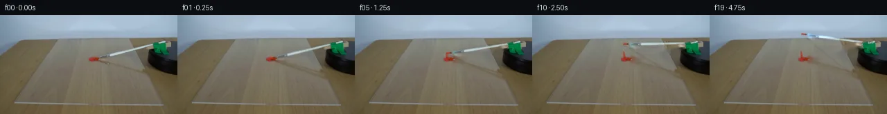

![首帧]()

Round 00
2026-11-05T05:55:46.401982+00:00像素候选变化代码 +200/−0inspection 更新
pixels 4729a46dc76000ea · code 75ca8c462e59fc93
查看本轮 generate.py 真实 diff
--- previous/generate.py
+++ current/generate.py
@@ -0,0 +1,200 @@
+from pathlib import Path
+
+import cv2
+import numpy as np
+from PIL import Image, ImageDraw, ImageFilter
+
+from artifact_io import save
+
+
+ROOT = Path(__file__).resolve().parent
+W, H = 256, 144
+PIVOT = np.array([229.0, 42.0], np.float32)
+TIP0 = np.array([134.0, 64.0], np.float32)
+ANGLES = np.array(
+ [0.0, 0.5, 1.3, 2.3, 3.5, 4.9, 6.4, 8.0, 9.7, 11.4,
+ 13.0, 14.6, 16.1, 17.5, 18.7, 19.7, 20.5, 21.1, 21.5, 21.7],
+ np.float32,
+)
+
+
+def rotate_point(point, degrees):
+ """Rotate clockwise on the image plane around the fixed platform pivot."""
+ a = np.deg2rad(degrees)
+ v = np.asarray(point, np.float32) - PIVOT
+ # In y-down image coordinates this is a visually clockwise rotation.
+ out = np.array([np.cos(a) * v[0] - np.sin(a) * v[1],
+ np.sin(a) * v[0] + np.cos(a) * v[1]])
+ return PIVOT + out
+
+
+def rgba_layer():
+ return Image.new("RGBA", (W * 4, H * 4), (0, 0, 0, 0))
+
+
+def scaled_points(points):
+ return [(float(x) * 4, float(y) * 4) for x, y in points]
+
+
+def downsample(layer):
+ return layer.resize((W, H), Image.Resampling.LANCZOS)
+
+
+def add_shadow(rgb, tip, angle):
+ """Soft tabletop projection: bristles touch the sheet, handle is elevated."""
+ layer = rgba_layer()
+ d = ImageDraw.Draw(layer)
+ # The attachment's projected shadow is displaced down-left by the fixed light.
+ shadow_end = np.array([211.0, 91.0], np.float32)
+ # Shadow becomes slightly fainter as the pale handle swings into the lit area.
+ opacity = int(round(43 - 0.35 * angle))
+ d.line(scaled_points([tip + (0, 1), shadow_end]), fill=(71, 51, 28, opacity), width=7)
+ d.line(scaled_points([tip + (0, 1), shadow_end]), fill=(83, 60, 34, max(12, opacity - 13)), width=3)
+ layer = layer.filter(ImageFilter.GaussianBlur(2.2))
+ return np.asarray(Image.alpha_composite(Image.fromarray(rgb).convert("RGBA"), downsample(layer)).convert("RGB"))
+
+
+def add_paint_smear(rgb, angle):
+ """Accumulate a short wet trail only while the bristles are leaving the dollop."""
+ if angle <= 0:
+ return rgb
+ layer = rgba_layer()
+ d = ImageDraw.Draw(layer)
+ reached = min(float(angle), 6.4)
+ samples = np.linspace(0.0, reached, max(3, int(reached * 1.8) + 2))
+ path = [rotate_point(TIP0, a) for a in samples]
+ # Tapered curved trace, built from short segments so its far end is narrow.
+ for i in range(len(path) - 1):
+ frac = i / max(1, len(path) - 2)
+ width = max(4, int(round(13 - 7 * frac)))
+ col = (156 + int(24 * frac), 38, 23, 205)
+ d.line(scaled_points([path[i], path[i + 1]]), fill=col, width=width)
+ # Wet highlight along the center and a tiny ridge where paint was pulled away.
+ if len(path) > 1:
+ d.line(scaled_points(path), fill=(210, 55, 34, 125), width=3)
+ end = path[-1]
+ d.ellipse((end[0] * 4 - 2.2, end[1] * 4 - 2.2,
+ end[0] * 4 + 2.2, end[1] * 4 + 2.2), fill=(193, 43, 26, 155))
+ return np.asarray(Image.alpha_composite(Image.fromarray(rgb).convert("RGBA"), downsample(layer)).convert("RGB"))
+
+
+def add_loaded_bristle(rgb, angle):
+ """Put a small diminishing red load on the moving bristle tip."""
+ tip = rotate_point(TIP0, angle)
+ neck = PIVOT + (tip - PIVOT) * 0.925
+ u = tip - neck
+ u /= max(1e-6, np.linalg.norm(u))
+ perp = np.array([-u[1], u[0]])
… diff truncated; 113 more lines …